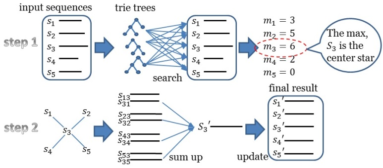
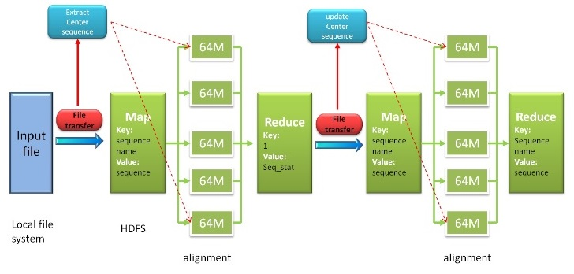

HAlign
HAlign is a package of multi-platform Java software tools, which aimed at large scale multiple similar DNA/RNA sequence alignment. HAlign employs center star multiple sequence alignment strategy. The input file should be a fasta DNA or RNA file. You can use this tool in any OS with JVM.
Datasets
mitochondrial genomes- Ref: Tanaka M., et al. (2004) Mitochondrial genome variation in eastern Asia and the peopling of Japan. Genome Res,14(10a), 1832-1850
- Dowload (zipped file): 1x (219KB) 20x (4.27MB) 50x (10.666MB) 100x (21.325MB)
- Ref: DeSantis, T. Z., et al.(2006) NAST: a multiple sequence alignment server for comparative analysis of 16S rRNA genes. Nucleic Acids Res, 34, W394-399
- Download (zipped file): small (21.864MB) big (197.224MB)
Related Tools
SP is a jar file, which can be used to compute the average value of sum-of-pair score for the alignment result.- jar: download
- source code
- Usage: java -jar sp.jar fasta_file [parameter.txt] [-s] where fasta_file is the alignment result, and parameter.txt stores the parameters(it can be omitted), and -s is the resample result(If there are too many sequences, -s can save the running time).
For Single Core User

The software tools should be run in any OS with JVM (version 1.6 or higher). The Trie Tree Version runs quickly than the K-Band Version. However, the K-Band Version considers the Affine Gap Penalty while the Trie Tree Version didn't.
Trie Tree Version
Download
- jar
- source This is a zipped file. Please unzip it first. This program was developed by Jbuilder. You can view the source codes in src file.
- test data
Manual
The input file should be a fasta file with DNA/RNA sequences. Put it in the same folder/path with the jar file.Please run-
# java -jar improvedcenterstar.jar test.txt 1
K-Band Version
Download
- jar This is a zipped file. Please unzip it first. It includes jar file, parameter file and a test input file.
- source This is a zipped file. Please unzip it first. This program was developed by Jbuilder. You can view the source codes in src file.
Manual
-
# java -jar MSA.jar inputfilename outputfilename
For Hadoop User

Download
Version 2.0. The newest and strongest version, which integrates 5 kinds of algorithms (suffix tree, trie tree, Kband for affine gap penalty, Kband for BLOSUM62 matrix and similarity matrix), supports DNA/RNA/Protein. More importantly, this version can help your file run on single Java environment and hadoop clusters at the same time. Version 1.1. This version can deal with the sequences with low similarity, but works a little slow. Version 1.0. This version can only deal with the sequences with high similarity, but works very quickly.Manual
Version 2.0. 1. if you are a single Java user, the command is: java -jar MSA2.0.jar input_file output_file algorithm_type ( example: java -jar MSA2.0.jar /home/user/input.txt /home/user/output.txt 0 )- input_file: String: input sequence file on local file system.
- output_file: String: final aligned sequence file on local file system.
- algorithm_type: Int: type of alignment algorithm. 0 is suffix tree (for DNA/RNA), which is recommended; 1 is Kband for BLOSUM62 matrix (for Protein); 2 is Kband for affine gap penalty (for DNA/RNA); 3 is trie tree (for DNA/RNA); 4 is similarity matrix (for DNA/RNA), which is the slowest among them. Obviously, only 1 supports protein file; 0, 2, 3 and 4 support DNA/RNA.
- input_file / output_file / algorithm_type: same as above.
- dfs_path: String: HDFS path which saving temporary distributed files
| 1.start hadoop | # hadoop start-all.sh |
| 2.leave the safe mode | # hadoop dfsamdin -safemode leave |
| 3. start the MSA program | # hadoop jar MSA1.X.jar MSA_console filename local_path dfs_path |
- filename is the input file name, which should be a fasta DNA/RNA file.
- local_path is the local file path, where would store the input file.
- dfs_path is the path in Hadoop file system.
The output files include
- dfs_path/MSAinput/inputKV The file stores the Key Value pairs.
- dfs_path/out/part-r-00000 The file stores sequence names, updated sequences, and the updated center star sequence.
- dfs_path/seqi/seqi The input file for the second Map function.
- dfs_path/theFinaloutput The final aligned sequence file
- local_path/seqi/FinalOutput The final aligned sequence file in local file system
Notice
Please confirm that the input file is a DNA or RNA fasta file. Make sure Hadoop can work in your cluster.Contact and Citation
Citation
Quan Zou, Qinghua Hu, Maozu Guo, Guohua Wang. HAlign: Fast Multiple Similar DNA/RNA Sequence Alignment Based on the Centre Star Strategy. Bioinformatics. 2015,31(15): 2475-2481. (link)Quan Zou, Xubin Li, Wenrui Jiang, Ziyu Lin, Guilin Li, Ke Chen. Survey of MapReduce Frame Operation in Bioinformatics. Briefings in Bioinformatics. 2014,15(4): 637-647. (link)
Contact
The software tools are developed and maintained by Dr. Quan Zou. If you find any bug, welcome to contact me and report.Acknowledgement
We thank to Mr. Yaozong Mao, who helped to develop the Hadoop version of our software tool. We thank to Mr. Shixiang Wan, who helped to developed the web server in Qingyun Hadoop System. The work was supported by the Natural Science Foundation of China (No.61370010).Related Work
- MAFFT
- KAlign
- PASTA
- HAlign (Chinese version)
- HPTree